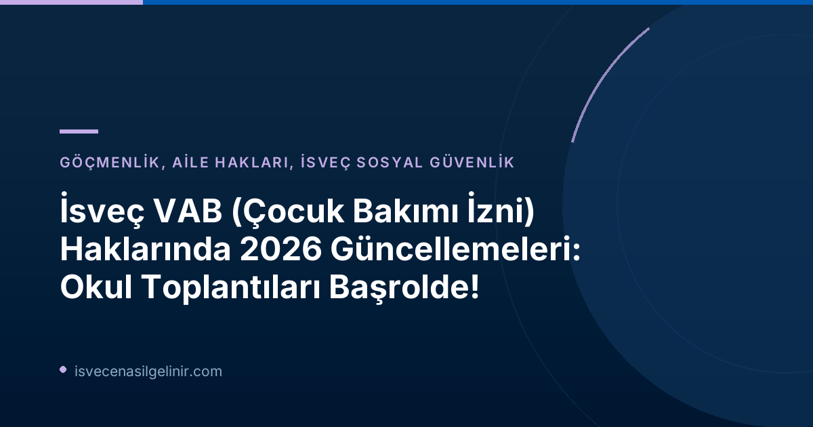

2026 Yılında VAB Haklarına Eklenen Yenilikler Neler?
1 Ocak 2026 tarihinden itibaren İsveç’te “Vård av sjukt barn” (VAB) yani hasta çocuk bakımı izni alma hakkı üç yeni durum için genişletildi. Bu düzenlemeler, çocukların eğitim ve sosyal hayatındaki özel ihtiyaçlarına daha iyi destek olabilmek amacıyla getirildi. İşte bu üç yeni VAB kullanım alanı:
- Çocuğun Hastalığı veya Engelliliği Nedeniyle Okul/Anaokulu Toplantıları: Ebeveynin, çocuğunun hastalığı veya bir fonksiyonel kısıtlılığı sebebiyle okulda veya anaokulunda yapılan toplantılara katılması gerektiğinde VAB alabilir. Bu, çocuğun özel ihtiyaçlarının veya sağlık durumunun görüşüldüğü bireysel eğitim planı (Åtgärdsprogram) toplantıları gibi durumları kapsar.
- Sosyal Hizmetler Kurumu ile İlgili Süreçler: Ebeveynin, sosyal hizmetler (socialtjänsten) tarafından yürütülen bir soruşturmaya veya çocuğun durumu hakkında yapılan ön değerlendirmeye katılması gerektiğinde VAB kullanma hakkı vardır. Bu tür değerlendirmeler, çocuğun refahı ve güvenliği ile ilgili önemli kararların alındığı süreçlerdir.
- Çocuğun Öz Bakım İhtiyaçları İçin Personel Eğitimi: Ebeveynin, çocuğunun örneğin diyabet veya egzama gibi özel öz bakım ihtiyaçları hakkında okul veya anaokulu personelini eğitmesi gerektiği durumlarda VAB alabilir. Bu düzenleme, çocuğun günlük yaşamda güvenliğinin ve sağlık ihtiyaçlarının doğru şekilde karşılanmasını sağlamak için kritik öneme sahiptir.
Försäkringskassan'dan Güncel VAB Kullanım Verileri (2026 İlk Yarısı)
Försäkringskassan’ın yayınladığı son rapora göre, bu yeni VAB imkanları 2026 yılının ilk yarısında yaklaşık 2.500 kişi tarafından kullanıldı. Kurumun analistlerinden Alma Wennemo Lanninger’ın belirttiğine göre, yeni düzenlemeler arasında en çok okul ve anaokulu toplantıları için VAB kullanımı öne çıkıyor. Ayrıca, ebeveynlerin çoğunun VAB’ı günün sadece bir kısmı için kullandığı ve bu yeni imkanların daha çok okul çağındaki çocuklar için değerlendirildiği gözlemlenmiştir.
| Yeni VAB Kullanım Alanı | İlk Altı Ayda Kullanan Kişi Sayısı |
|---|---|
| Okul/Anaokulu toplantıları ve görüşmeleri (hastalık/engellilik nedeniyle) | 1.580 |
| Sosyal hizmetler kurumu ile ilgili soruşturma veya ön değerlendirme katılımları | 870 |
| Çocuğun öz bakım ihtiyaçları için okul/anaokulu personeli eğitimi | 120 |
| Toplam Tekil Kullanıcı | Yaklaşık 2.500 |
En Çok 11 Yaşındaki Çocuklar İçin Kullanıldı
Försäkringskassan'ın verilerine göre, yeni VAB durumları en çok 11 yaşındaki çocuklar için kullanılmıştır. Bu durum, okul çağındaki çocukların eğitim ve sosyal destek süreçlerinde ebeveyn katılımının önemini bir kez daha ortaya koyuyor.
Toplam VAB ödenekleri göz önüne alındığında, bu üç yeni durumun toplam içinde çok küçük bir paya sahip olduğunu belirtmek gerekir. Ancak bu düzenlemeler, ailelerin çocuklarının özel ve kritik gelişim süreçlerinde onlara destek olma esnekliğini artırması açısından büyük önem taşımaktadır.
İsveç’te VAB Hakkınızı Nasıl Kullanırsınız?
VAB hakkınızı kullanmak için, çalışmamanız gereken dönem için Försäkringskassan'a başvurmanız gerekmektedir. Başvurunuzu kurumun web sitesi üzerinden online olarak yapabilir veya form doldurarak gönderebilirsiniz. Yeni durumlar için VAB başvurusu yaparken, durumu açıklayıcı bilgileri eksiksiz sağlamanız önemlidir. Örneğin, okul toplantısı için VAB alıyorsanız, toplantının nedeni ve içeriği hakkında bilgi vermeniz istenebilir.
İsveç'teki sosyal haklar ve vatandaşlık süreçleri hakkında detaylı bilgi edinmek, İsveç Vatandaşlık Sınavı'na hazırlanmak için sitemizi ziyaret edebilirsiniz. Bilgilerinizi güncel tutmak, İsveç'teki yaşam kalitenizi artırmanın anahtarıdır.
Sıkça Sorulan Sorular (SSS)
VAB ne anlama gelir?
VAB, İsveççe "Vård av sjukt barn" kelimelerinin kısaltmasıdır ve hasta çocuk bakımı anlamına gelir. Ebeveynlerin, hasta olan veya özel bakıma/eğitime ihtiyacı olan çocuklarına bakmaları gerektiğinde işten izin almalarını sağlayan bir sosyal güvenlik ödeneğidir.
Yeni VAB hakları kimler için geçerlidir?
Tüm ebeveynler veya yasal vasiler için geçerlidir. Çocuğun hastalığı, engelliliği, sosyal hizmetler değerlendirmeleri veya öz bakım eğitimi gibi durumlarda çocuklarıyla ilgilenmeleri gereken ebeveynler bu haktan faydalanabilir.
Bu yeni VAB durumları ne zamandan beri yürürlükte?
Bu üç yeni VAB durumu, 1 Ocak 2026 tarihinden itibaren yürürlüğe girmiştir.
VAB başvurusu nasıl yapılır?
VAB başvuruları Försäkringskassan'ın resmi web sitesi üzerinden online olarak veya ilgili formları doldurarak yapılmaktadır. Başvuru yaparken, durumunuzu ve VAB kullanım nedeninizi detaylıca belirtmeniz önemlidir.
Referanslar
- Försäkringskassan - Ny möjlighet att vabba har nyttjats mest för möten i skolan (30 Haziran 2026)
- sverigemedborgarskapsprov.com
İsveç'teki Haklarınızı Keşfedin!
İsveç'te yaşayan bir ebeveyn olarak haklarınızı merak mı ediyorsunuz? VAB gibi sosyal güvenlik ödenekleri, vatandaşlık süreçleri ve daha fazlası hakkında güncel ve doğru bilgilere ulaşmak için kaynaklarımızı inceleyin.